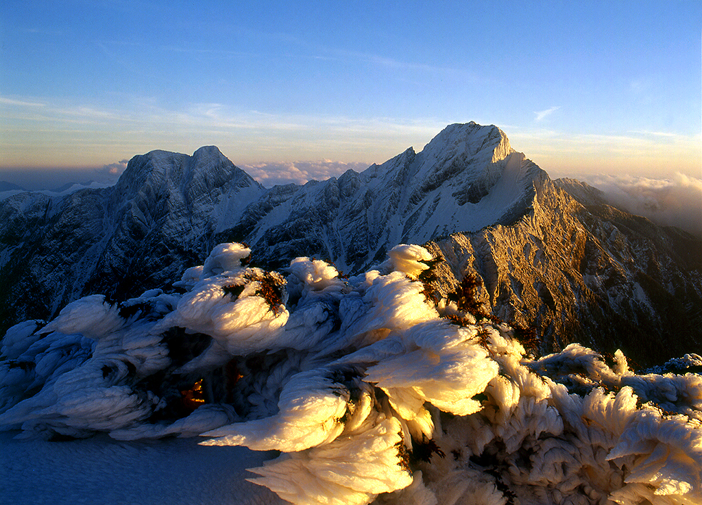

玉山國家公園
玉山主峰位於南投縣信義鄉，高聳的海拔讓台灣成為世界地勢第4高的島嶼，山脈巍巍高聳、氣勢逼人，東側是碎石遍佈的陡坡、西面深溝萬壑、南側和北側則為陡峭的山壁，是台灣五岳之首、百岳之王。
花期
玉山國家公園著名的玉山花期約在每年的3月至4月份，因海拔超過3000公尺以上的山區，依然覆蓋著靄靄白雪，倒是海拔1500至2500公尺左右的山區已進入花季，最常見的花卉，從3月初春的笑靨花、3下旬至4月中旬的臺灣馬醉、臺灣杜鵑花季，4月下旬至5月下旬的毛地黃；5月夏季在八通關草原一帶的紅毛杜鵑花季、玉山杜鵑花季，5月下旬至7月上旬法國菊 的美景、5月下旬至10月上旬八通關草原、嘉明湖和南玉山的高山草原景緻；邁入9月秋季在秀姑巒山有黃菀、10下旬至11月中旬楓紅和高山芒花，到11月下旬則是欣賞雲海的時節，12月下旬隔年3月上旬來到玉山國家公園則可欣賞到白茫茫的雪花世界。
玉山國家公園的玉山群峰以玉山主峰為中心，涵蓋台灣百岳山峰組成，是玉山國家公園特別景觀區之一，也是8個特別景觀區中面積最大的一個，有亞熱帶、暖溫帶、冷溫帶和高山寒原帶等各種氣候型態，發展出各種動物生態資源和植物林相，是台灣珍貴的大自然寶庫。
